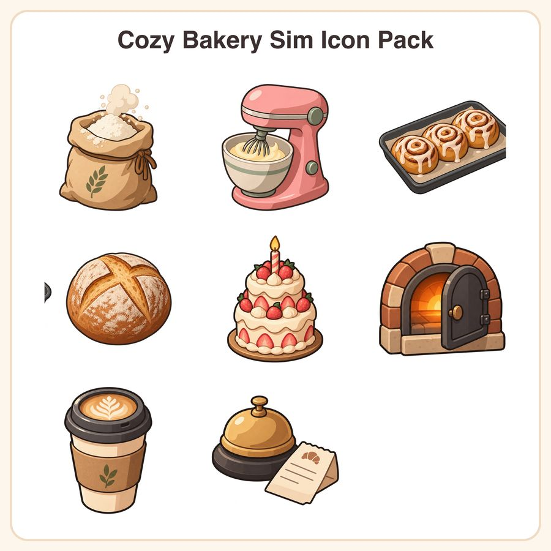

$5.99
Buy nowGet it on itch.ioView on EtsyGive your cozy bakery or cafe-sim game a warm, cohesive look in minutes — no need to commission eight different artists and fight style mismatch. This pack delivers 8 cel-shaded semi-flat icons, all built on the same 512x512 canvas with consistent 8px padding, uniform two-tone shading, and a matching top-left light source, so they drop right into your UI or item grid looking like one unified set. What's included: • 8 1024px transparent PNGs files (fully scalable, easy to recolor/edit) • 8 PNG files at 512x512px, transparent background • Flour sack with rolled top + dusting cloud • Stand mixer with whipped batter bowl + whisk • Tray of 3 glazed cinnamon rolls with icing drizzle • Rustic sourdough boule with scored cross • Tiered strawberry cream cake with candle • Half-open brick oven door with warm glow • Takeaway latte cup with leaf foam art + sleeve • Bakery counter bell + folded order ticket Palette: buttercream, caramel brown, strawberry pink, sage, soft charcoal, with clean 6px charcoal outlines and rounded silhouettes throughout. How to use: Drop the PNGs straight into your game engine (Unity, Godot, GameMaker, etc.) or open the PNG in Illustrator/Figma/Inkscape to recolor, resize, or remix pieces for your own icons and UI. License: For personal and small-business commercial use in games/apps, up to 500 units sold or downloads distributed. Please don't resell, redistribute, or share the raw files themselves, even if edited. A quick honest note: these designs were created in-house by our shop with the help of AI tools as part of our design workflow, then refined and finalized by hand for consistency. Questions before you buy? Just message us — happy to help you figure out if this pack fits your game's vibe.